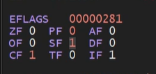
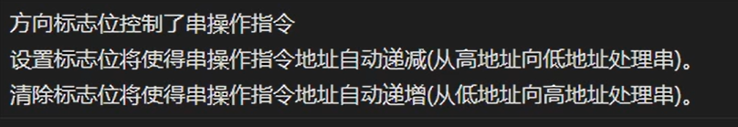
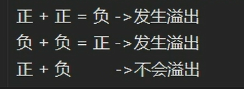

一、寄存器
寄存器的本质就是一片存储空间。
不同型号的CPU可能对应着不同种类的寄存器组 。
CPU中的每个核心都对应着一组寄存器。
高位的寄存器可以向下兼容低位程序。
寄存器的分类
-
通用寄存器（32bit）：用于在处理器上处理数据时临时存储数据，8个
EAX：用于算术计算的主寄存器。也称为累加器，因为它包含算术运算的结果和函数返回值。
EBX：基本寄存器。指向 DS 段中数据的指针。用于存储程序的基址。
ECX：计数器寄存器通常用于保存一个值，该值表示要重复的进程的次数。用于循环和字符串操作。
EDX：通用寄存器。此外，还用于 I/O 操作。此外，还将 EAX 扩展到 64 位。
ESI：源索引寄存器。指向 DS 寄存器指向的段中的数据的指针。在字符串和数组操作中用作偏移地址。它保存从中读取数据的地址。
EDI：目标索引寄存器。指向 ES 寄存器指向的段中的数据（或目标）的指针。在字符串和数组操作中用作偏移地址。它保存所有字符串操作的隐含写入地址。
EBP：基指针。指向堆栈上的数据的指针（在 SS 段中）。它指向当前堆栈帧的底部。它用于引用局部变量。
ESP：堆栈指针（在 SS 段中）。它指向当前堆栈帧的顶部。它用于引用局部变量。
通用寄存器虽为32位寄存器，但它们可以向下兼容16位，甚至8位的数据。
例如， EAX(32) AX(16) AH\AL(8)
32bit 16bit 8bit EAX AX AH EBX BX AL ECX CX BH EDX DX BL ESP SP CH EBP BP CL ESI SI DH EDI DI DL
- 段寄存器 （均为16bit）：用于引用存储器位置 ， 6个
**CS：**代码段寄存器存储用于数据访问的代码段（.text 部分）的基本位置。
1.CS 寄存器包含指向内存中代码段的指针。代码段是指令代码存储在内存中的位置。处理器根据 CS 寄存器值和指令指针 （EIP） 寄存器中包含的偏移值从内存中检索指令代码。
2.任何程序都不能显式加载或更改 CS 寄存器。处理器在为程序分配内存空间时分配其值。
**DS：**数据段寄存器存储用于数据访问的变量（.data 部分）的默认位置。
**ES：**在字符串操作期间使用的额外段寄存器。
**SS：**堆栈段寄存器存储堆栈段的基位置，在隐式使用堆栈指针或显式使用基指针时使用。
**FS：**额外段寄存器。
**GS：**额外段寄存器。
注意：段寄存器被视为操作系统的一部分，在几乎所有情况下都不能直接读取或更改。
段的机制也是CPU的一种保护模式：
在保护模式平面模型（32 位的 x86 体系结构）中工作时，程序运行并接收一个 4GB 地址空间，任何 32 位寄存器都可能寻址 40 亿内存位置中的任何一个，但操作系统定义的受保护区域除外。物理内存可能大于 4GB，但 32 位寄存器只能表示 4,294,967,296 个不同的位置。如果计算机中的内存超过 4GB，则操作系统必须在内存中安排一个 4GB 区域，并且程序仅限于该新区域。此任务由段寄存器完成，操作系统对此保持密切控制。
-
指令指针寄存器
EIP：逆向工程中最重要的寄存器。EIP 会跟踪要执行的下一个指令代码。弹性公网IP指向要执行的下一条指令。如果您要更改该指针以跳转到代码中的另一个区域，则可以完全控制该程序。
-
控制寄存器 ： 用于确定 CPU 的运行模式和当前执行任务的特性
CR0：控制处理器的操作模式和各种状态的系统标志。
CR1：（当前未实现）
CR2：内存页故障信息。
CR3：内存页面目录信息。
CR4：启用处理器羽化并指示处理器功能的标志。
每个控制寄存器中的值不能直接访问，但控制寄存器中的数据可以移动到其中一个通用寄存器中，一旦数据在GP寄存器中，程序就可以检查寄存器中的位标志，以确定处理器的运行状态以及当前正在运行的任务。
如果需要更改控制寄存器标志值，则可以对 GP 寄存器中的数据进行更改，并将寄存器移动到 CR。普通应用程序通常不会修改控制寄存器条目，但它们可能会查询标志值以确定当前运行程序的主机处理器芯片的功能。
-
标志寄存器(32bit)：用于验证每个程序函数成功执行的检查，就一个。
EFLAGS

目前学习的是 CF PF AF ZF SF DF
CF （Carry Flag）—–进位标识—-（在某些软件中用CY表示）
当发生进位时，由0变成1；当发生借位时，由1变成0；
也可用于表示 无符号 整数运算时，发生溢出。
注： 进位的含义：假设一个寄存器范围为8bit , 当前值为0xFF，当再进行+1时，会导致寄存器溢出，值变为0x00。此时CF标志位会由0变成1。
如下图：
PF （parity flag）—奇偶标志—（在某些软件中用PE表示）
当运算结果的 最低有效字节 中的1为偶数时，变为1；为奇数时，变为0；
不管运算结果的长度为多少，只看最低字节位中的1的个数，即0-7bit位的1的个数。
AF(auxiliary carry flag)– 辅助进位–（在某些软件中用AC表示）
运算结果，低四位向高四位发生进位时，值置为1；借位时，置为0.
ZF （zero flag ）—零标志位
运算结果为0，置为1；反之为0；
例如，
MOV AL,FFH ;
ADD AL,01H；
此时AL 的值为00H ,ZF位置为1.
SF(sign flag) —- 符号标志 —（某些软件中用PL表示）
该值与运算结果中的最高有效位的值一致。即符号位，用于指示整数还是负数
最高有效值为1，它为1 ；反之为0；
例如：
MOV AL 70H;
// 0111 0000
ADD AL 10H;
// 0001 0000
结果为 1000 0000 ,最高有效位为1，所以SF为1
DF(Drection Flag) — 方向标志 — 某些软件称为 UP
控制处理字符串的顺序

OF (overflow flag) —溢出标志–某些软件叫OV
它与CF标志位类似，表示 有符号 整数运算时，发生溢出。
简单的判断规则：

具体原理说明：
OF 标志位是用于判断运算是否为有符号运算。当为1则是，为0则反之。
一段运算结束后，发生了进1，同时，会将CY的值和运算的最高有效位进行异或，异或的值为1，则OF为1，反之为0
补充：异或：不同为1，相同为0.
例如：
一、 MOV AL , 7FH; // 0111 1111
ADD AL , 01H; // 0000 0001
按照有符号运算，最终值为 000 1000 0000 值为有符号整数的-128 (十进制)
此时按无符号来说没有发生溢出，CY=0 , 最高有效位为1，异或为1，所以 OF=1
符合正+正= 负 > 发生溢出。
二、MOV AL ，80H // 1000 0000
ADD AL，80H // 1000 0000
按有符号运算，最终值为 001 0000 0000 值为有符号整数的0 (十进制)
此时按无符号来说发生溢出，使CY=1 ，最高有效位为0 ， 异或为1 ，所以OF =1
符合负+负= 正 > 发生溢出。
扩展：计算机并不认识什么是有符号整数，什么是无符号整数，它只是通过CY和OF的值去判断他们是什么。
二、堆栈
是一段连续的内存部分，编程语言中的函数本质就是堆栈。
堆栈上有两个操作，分别是 push （入栈操作）和 pop（出栈操作）。
堆栈是一个后进先出的数据结构，
由 CPU 密切管理和优化。每当函数声明一个新变量时，它就会被推送到堆栈上。每当函数存在时，该函数推送到堆栈上的所有变量都会被释放或删除。释放堆栈变量后，该内存区域将可用于其他堆栈变量。
堆栈存储变量的优点是可以为您管理内存。您不必手动分配内存或手动释放内存。CPU 非常有效地管理和组织堆栈内存，并且速度非常快。
至关重要的是，当函数退出时，它的所有变量都会从堆栈中弹出并永远丢失。堆栈变量是局部变量。堆栈会随着函数推送和弹出局部变量而增长和缩小。